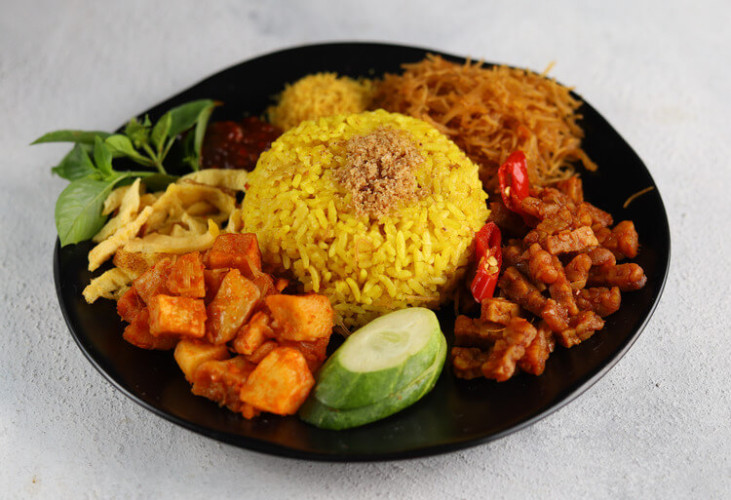
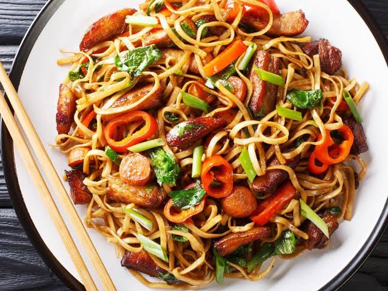
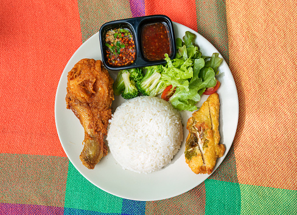

Daftar Masakan
| Nama Masakan | Bahan Utama | Tingkat Kesulitan |
|---|---|---|
| Nasi Kuning | Nasi, santan, kunyit | Sedang |
| Mie Goreng | Mie, telur, sayuran | Mudah |
| Ayam Goreng | Ayam, bumbu rempah | Mudah |



Tambah Resep
Tentang Saya
Halaman web ini dibuat sebagai wadah untuk mendokumentasikan berbagai menu masakan rumahan yang saya pelajari dan kuasai sehari-hari. Melalui halaman ini, resep dan tingkat kesulitan masakan dapat diakses dengan mudah dan terstruktur.